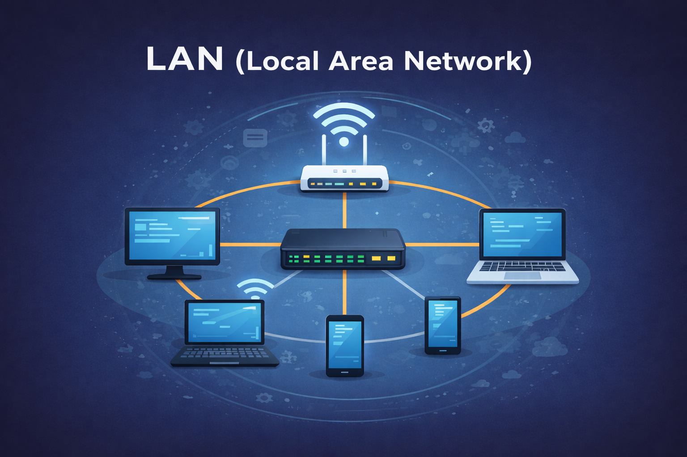
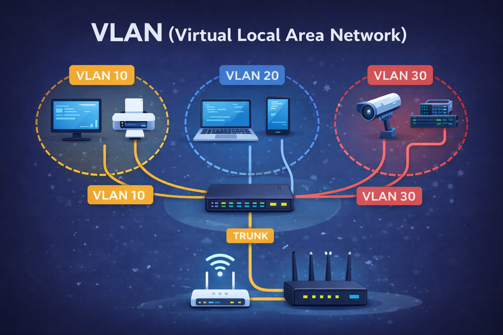
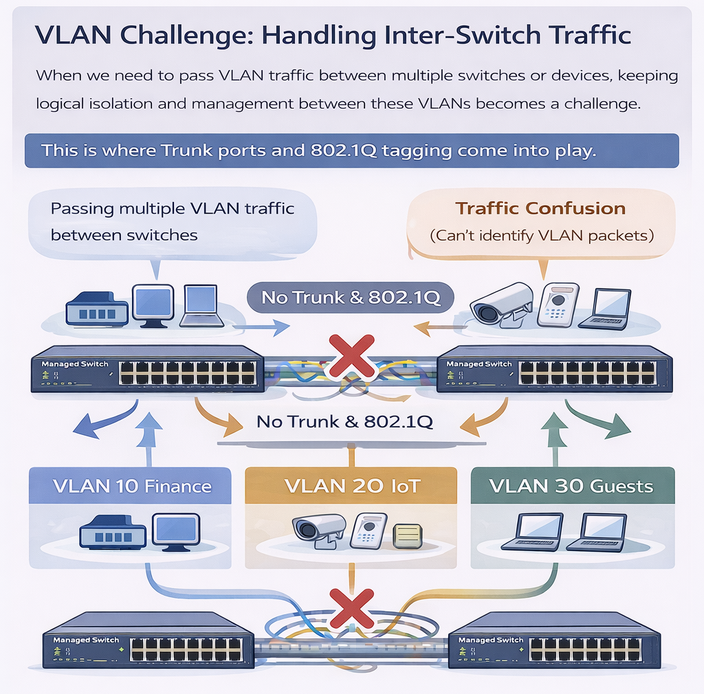
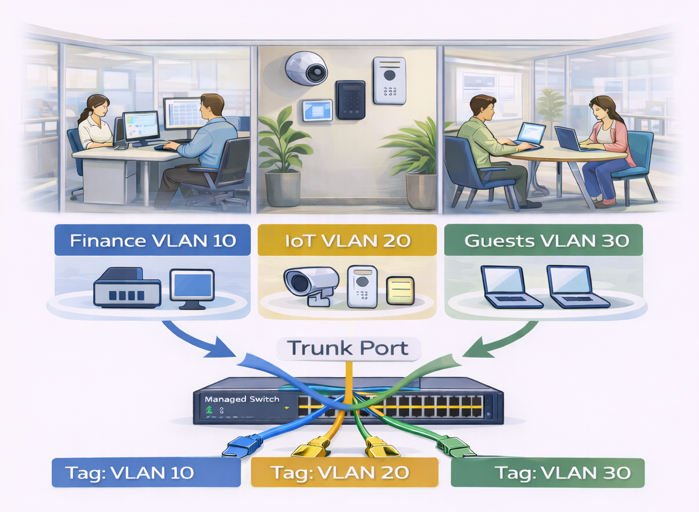

Networking · 概念速成
WAN → LAN → VLAN → Router → Wi-Fi 世代 → 升級策略
用最少的概念建立一套「看得懂、講得清、選得準」的網路升級思路。
你會得到什麼
一條線串起 WAN / LAN / VLAN 的差異
理解 Trunk / 802.1Q Tag 何時需要
Router 與 Wi-Fi 世代的搭配邏輯
升級順序與 CP 值判斷框架
你會學到
①
WAN / LAN / VLAN 核心概念
定義、用途、常見設備與實際應用情境。
②
VLAN 設計思維
為什麼需要 Trunk / Tag（802.1Q）及日常應用。
③
Router 的角色與升級價值
在家庭與辦公網路中的位置，以及升級為何立刻有感。
④
Wi-Fi 世代差異
Wi-Fi 6 / 6E / 7 / 8 的定位、差異與演進方向。
⑤
Router × Wi-Fi 搭配判斷
不同世代搭配的體感差異與 CP 值分析。
⑥
升級決策方法
依裝置、干擾環境與需求，選出最適合的升級組合。
互動小工具
點下面按鈕，快速看重點摘要：
WAN 重點
LAN 重點
VLAN 重點
🌍 WAN：跨城市/國家連線，常見是 ISP、專線、SD-WAN。
🏠 LAN：你家或公司內網，交換器、AP、路由器常見。
🧩 VLAN：在同一組交換器上切出多個邏輯網段，隔離與管理更好。
# WAN 是什麼
WAN（Wide Area Network） 是「廣域網路」，把不同地點的網路連起來。
你可以把它想成「城市與城市之間的高速公路」。
WAN（廣域網路）：負責連接不同地點的網路，解決「跨城市 / 跨據點」的連線問題
常見情境
分公司與總部互通（專線、VPN、SD-WAN）
家裡上網連到 ISP（光纖/有線/行動網路）
雲端服務連線（企業到雲的連線策略）
WAN 不只是「速度」差異
很多人以為 WAN 的差別只在「100M / 500M / 1G」，
但實際使用體感常常取決於以下幾個因素：
延遲（Latency） ：影響視訊會議、雲端操作、遊戲即時性穩定度（Jitter / 封包遺失） ：決定會不會忽快忽慢路由品質 ：跨國或跨雲服務時特別明顯
不同 WAN 類型，差別在哪？
一般家用寬頻 ：速度高、成本低，但尖峰時段容易波動企業專線 ：延遲穩定、SLA 保證，適合關鍵業務VPN / SD-WAN ：在多據點或雲端環境提升可控性與彈性
為什麼 WAN 問題常被誤以為是 LAN 問題？
使用者常說「公司網路慢」，但實際原因可能在 WAN 端，例如：
跨國連線延遲高
ISP 路由繞路或品質不佳
雲端服務節點距離遠
這也是為什麼在排查問題時，需要先分清楚是 WAN 還是 LAN 的瓶頸。
常見設備/技術
路由器（Router）、防火牆（Firewall）
VPN、MPLS、SD-WAN
ISP 提供的 CPE / Modem/ONT
# LAN 是什麼
LAN（Local Area Network） 是「區域網路」，通常是同一個物理場域內的網路（家、辦公室、校園一棟樓）。

LAN（區域網路）：負責同一個場域內的設備互通，解決「內部連線與效率」問題
LAN 的目標
讓內部設備互通（電腦、印表機、NAS、伺服器）
提供 WiFi 覆蓋與有線接入
用交換器把多台設備接在一起
LAN 不只是「接起來就好」
許多人以為 LAN 只是把設備插上交換器就完成了，
但實際上，LAN 的品質會直接影響整個網路體感。
封包轉發效率 ：影響多人同時使用是否順暢廣播流量控制 ：設備一多就容易拖慢整網交換器效能 ：低階設備在高流量下容易成為瓶頸
為什麼 LAN 常是「看不見的瓶頸」？
即使 WAN 頻寬很高，如果 LAN 設計不佳，使用者仍會覺得網路慢。
交換器無法同時處理大量連線
WiFi AP 接在錯誤的網段或頻寬受限
所有裝置混在同一個廣播域
這也是為什麼升級光纖後，體感不一定會跟著提升。
LAN 和 VLAN 的關係是什麼？
LAN 是「實體網路」，VLAN 是在 LAN 上做的「邏輯切分」。
LAN ：線路、交換器、AP 組成的實體環境VLAN ：在同一個 LAN 上切出多個獨立網段目的 ：降低干擾、提升安全性與管理效率
沒有良好的 LAN 基礎，VLAN 也無法真正發揮效果。
什麼情況下該重新檢視 LAN 設計？
設備數量明顯變多（IoT、監視器、AP）
多人同時使用時容易互卡
WiFi 訊號滿格，但速度與穩定度不佳
新增 VLAN 後管理變得複雜
常見設備
交換器（Switch）：負責二層轉發
無線基地台（AP）：提供 WiFi
路由器：LAN 與 WAN 之間的「關卡」
當 LAN 中的設備越來越多、用途越來越複雜，
單純提升交換器或頻寬已經不足以解決問題，
這時就需要一種方式在「不重新拉線」的情況下，
對網路進行邏輯切分與隔離。
# VLAN 是什麼
VLAN（Virtual LAN） 是「虛擬區域網路」，它可以在同一套交換器/網路布線上，
用邏輯方式切出多個網段，達到隔離、管理與安全 的目的。這樣，每個 VLAN 就像是一個獨立的小網路，
它們之間互不干擾，能更有效地進行管理和資源分配。

VLAN（虛擬區域網路）：在同一個 LAN 上做邏輯切分，解決「隔離、管理與安全」問題
為什麼要 VLAN？
訪客 WiFi 與公司內網隔離
IoT 設備（監視器、門禁）和員工電腦分開
不同部門（財務/研發/客服）各自一個網段
VLAN 的挑戰：多交換機間的流量處理
當需要在多個交換機或設備之間傳遞 VLAN 的流量時，如何保持這些 VLAN 之間的邏輯隔離和管理就成為一個挑戰。
這時候，『Trunk 端口』 和 『802.1Q 標籤（Tagging）』 技術便發揮了作用。

Trunk 和 Tag：多交換機間的解決方案
在交換機之間傳送多個 VLAN 的流量時，『Trunk 端口』 用來讓單一物理鏈路支持多個 VLAN，
並且通過 『802.1Q 標籤（Tagging）』 將每個數據包與其對應的 VLAN ID 相標識。這樣，即使多個 VLAN 的流量通過同一條物理鏈路，
每個 VLAN 的數據依然能夠保持獨立且被正確地路由到相應的目標。
Access Port ：端口只屬於某一個 VLAN（例如，終端設備直接連接的端口）Trunk Port ：一條鏈路承載多個 VLAN 的流量（交換機之間、交換機與 AP 之間的鏈路）Tag（802.1Q） ：在數據包中插入 VLAN 標籤，告訴接收端該數據包屬於哪個 VLAN
如何工作？
想像一下，你的辦公室裡有多個部門，每個部門都有自己的 VLAN，
而這些部門的數據需要通過公司內部的交換機傳輸。Trunk 端口和 Tag 標籤會確保數據包能夠在多個交換機之間流動，
同時保持每個部門的數據隔離。

三個不同部門的 VLAN（Finance、IoT、Guests）：
Finance VLAN 10： 左側是財務部門的員工，連接到管理型交換機，標示為 VLAN 10。IoT VLAN 20： 中間顯示 IoT 設備（如監視器、門禁設備），這些設備屬於 VLAN 20。Guests VLAN 30： 右側是訪客區域，顯示兩台筆記型電腦，這些設備屬於 VLAN 30。
Trunk Port 和 Tag 標籤的應用：
VLAN 標籤（Tag）與 Trunk 端口的角色：
# WAN / LAN / VLAN 比較
一句話總結：WAN 解決跨地點連線，LAN 解決場域內互通，VLAN 則在 LAN 上做邏輯隔離與管理。
項目
WAN
LAN
VLAN
範圍
跨城市/國家
同場域（家/公司）
同一個 LAN 內的邏輯切分
目的
據點互聯/上網
內部互通
隔離/管理/安全
常見設備
Router/Firewall/SD-WAN
Switch/AP/Router
Managed Switch/AP（支援 VLAN）
你最常遇到
ISP、VPN、雲連線
辦公室網路
訪客網路、部門隔離
簡單來說，Router 就是網路的交通指揮中心 。
所有裝置的資料流量，幾乎都會先經過 Router，再被送往正確的目的地。
很多人以為網路慢是「電信速度不夠」，
但實際上，老舊的 Router 往往才是真正的瓶頸 。
即使升級了高速光纖，如果 Router 跟不上，使用體感仍然有限。
為什麼要升級 Router？
🚦 多裝置同時使用更穩定
🚀 實際速度更接近光纖上限
🎮 延遲更低，重要流量優先
🔐 資安與管理能力提升
📡 覆蓋範圍與穩定度改善
重點整理：
升級 Router 不只是追求「速度數字」，而是讓
所有裝置、在任何時候 都能穩定上網。
已經了解 Router 的角色後，接下來可以直接跳到 Wi-Fi 世代簡介：
# WiFi 6 / 6E / 7 / 8 比較點選指標後，四張卡會更新分數與重點。
各 Wi-Fi 世代適合誰？
Wi-Fi 6｜主流穩定型（家庭 / 一般辦公）
Wi-Fi 6E｜低干擾高速型（6GHz / 高密度環境）
Wi-Fi 7｜高效能進階型（低延遲 / 高吞吐）
Wi-Fi 8｜未來應用導向（可靠度 / 協同運作）
⚡ 吞吐
⏱️ 延遲
🛡️ 穩定
🧠 干擾
Router × Wi-Fi 世代比較搭配表
⭐ 越多 = 體感越強（速度＋穩定＋延遲）
裝置 Wi-Fi 世代 \ Router 世代
Wi-Fi 5 Router
Wi-Fi 6 Router
Wi-Fi 6E Router
Wi-Fi 7 Router
Wi-Fi 5 裝置
⭐
⭐
⭐
能用，多人易塞車
⭐
⭐
⭐
穩定度提升，多人不卡
⭐
⭐
⭐
同頻干擾↓
⭐
⭐
⭐
系統穩定
Wi-Fi 6 裝置
⭐
⭐
⭐
速度受限
⭐
⭐
⭐
⭐
速度+穩定，最佳CP
⭐
⭐
⭐
6GHz全開
⭐
⭐
⭐
⭐
高速穩定
Wi-Fi 6E 裝置
⭐
⭐
⭐
發揮受限
⭐
⭐
⭐
⭐
穩定度提升
⭐
⭐
⭐
6GHz全開
⭐
⭐
⭐
⭐
有效發揮
Wi-Fi 7 裝置
⭐
⭐
⭐
基本連線
⭐
⭐
⭐
潛力受限
⭐
⭐
⭐
良好表現
⭐
⭐
⭐
⭐
⭐
極致表現
搭配情境解析
🟦 舊裝置 × 新 Router
重點：穩定度、資安、多裝置能力（速度提升有限但更不會忽快忽慢）。
🟩 Wi-Fi 6 裝置 × Wi-Fi 6 Router（CP 最高）
重點：速度＋穩定全面升級，多數家庭與辦公最剛好。
🟨 Wi-Fi 6E 裝置 × Wi-Fi 6E Router
重點：6GHz 干擾少，近距離低延遲很有感，但穿牆較弱。
🟥 Wi-Fi 7 裝置 × Wi-Fi 7 Router
重點：效能、延遲、未來性拉滿，適合一次買好用 5 年。
一句話記憶： 升級 Router 先解決「塞車與不穩」，Wi-Fi 世代升級才是把「最高速度解鎖」。
🎯 懶人升級建議
路由器 4–5 年以上
直接升到 Wi-Fi 6，穩定度立刻有感。
干擾嚴重＋新裝置
考慮 Wi-Fi 6E，用 6GHz 避開鄰居擁塞。
旗艦設備＋長期使用
Wi-Fi 7 一次到位，低延遲與未來性最佳。
# 常見問題一、網路概念（WAN / LAN / VLAN）
VLAN 之間能互通嗎？
預設不會互通（隔離），若要互通通常需要三層設備做路由（例如 L3 switch 或 router），
同時搭配 ACL / Firewall 控制可通哪些服務。
我家需要 VLAN 嗎？
如果你有 IoT（攝影機、智慧家電）、訪客需求或想把工作設備隔離，VLAN 很實用；
如果只是一般上網，未必需要。
二、Router 與升級判斷
Router 一定要跟 Wi-Fi 世代一起升級嗎？
不一定要同時升級，但要知道：Router 會決定整體網路的上限與穩定度 。
即使你的手機或筆電支援 Wi-Fi 6 / 7，如果 Router 的效能、頻段或功能跟不上，
速度與延遲仍可能無法完全發揮。常見做法是：先升級 Router 解決「塞車與不穩」，再視裝置世代逐步跟上。
什麼情況下「升級 Router」會比「換裝置」更有感？
你可以用這些現象判斷：
多人同時上網就互卡（手機、電視、筆電一起用）
遊戲或視訊會議延遲忽高忽低
ISP 已升級 500M / 1G，但實際體感沒變
家裡 IoT 裝置變多後更容易不穩
若出現其中兩項以上，通常先升級 Router（或佈建 Mesh）會更有感。
升級 Router 後，我需要重設所有裝置嗎？
多數情況不需要。你可以把新 Router 的 Wi-Fi 名稱（SSID）與密碼設成與舊的一樣，
手機與筆電通常會自動重新連上。
若你從 Wi-Fi 5 升級到 Wi-Fi 6 / 6E / 7，建議最後做一次簡單測試，
確認速度與延遲的體感是否符合預期。
Mesh Router 跟 Wi-Fi 世代，哪個比較重要？
兩者解決的是不同問題：Mesh 解決覆蓋 （死角、跨房訊號弱），
Wi-Fi 世代解決效率與延遲 （多人同時使用不卡、體感更順）。
如果你家有明顯死角，先補覆蓋通常更有感；覆蓋沒問題但還是卡，再考慮升級 Wi-Fi 世代。
三、Wi-Fi 6 / 6E / 7 / 8 選擇
Wi-Fi 6 與 Wi-Fi 6E 差在哪？我需要 6E 嗎？
最大差異是：Wi-Fi 6E 新增了 6GHz 頻段 。
6GHz 的干擾通常較少，適合公寓或辦公室等高密度環境，
在穩定度與延遲體感上會更好。
若你的環境干擾不大、裝置多數仍是 Wi-Fi 6，先升級 Wi-Fi 6 Router 也很夠用。
裝置不支援 Wi-Fi 7，我換 Wi-Fi 7 Router 有用嗎？
有用，但屬於「整體體驗提升」，而不是單一裝置速度直接翻倍。
舊裝置仍會以原本的 Wi-Fi 規格連線，
但新 Router 在多裝置調度、延遲控制與資安支援上通常更好，
對全家或辦公室一起使用時的穩定度幫助很大。
Wi-Fi 8 現在需要急著升級嗎？
一般家用不需要急。
你可以把 Wi-Fi 8 視為「往更低延遲與更高可靠度」的演進方向，
目前更偏向理解趨勢。
以現階段來說，把 Wi-Fi 6 或 6E 佈建好，已能滿足大多數家庭與辦公需求。